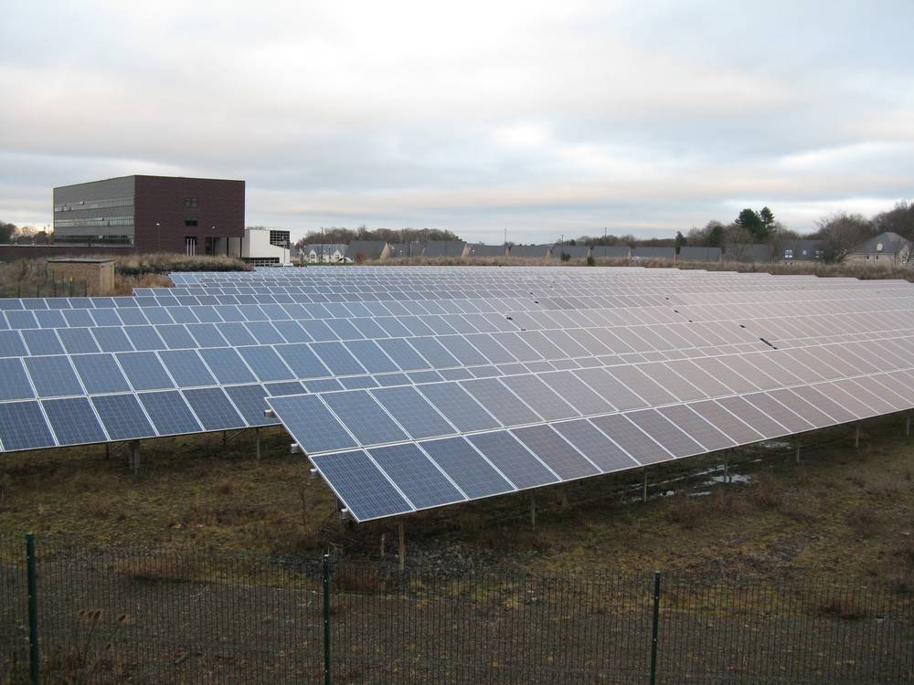

스코틀랜드 주민 10명 중 7명 "학교·공공건물 지붕에 태양광 달자"…반대는 6%

업계 단체 여론조사, 새집 태양광 의무화 찬성 59%·집 근처 태양광단지 찬성 43% 대 반대 22%…"정부·지자체가 행동으로 옮겨야"
스코틀랜드 주민 10명 중 7명이 공공건물에 태양광 패널을 달기를 바라는 것으로 나타났다. 업계 단체 솔라에너지스코틀랜드가 여론조사기관 모어인커먼에 맡긴 조사에서 공공건물 태양광 설치 찬성은 70%, 반대는 6%에 그쳤고, 잉글랜드·웨일스처럼 새로 짓는 집에 태양광을 의무로 달게 하는 정책에는 59%가 찬성했다. 집 근처에 태양광단지가 들어서는 데에도 찬성이 43%로 반대 22%의 두 배 가까이 됐으며, 스코틀랜드에 태양광 발전 공식 목표를 정하자는 응답은 51%였다. 응답자의 38%는 자기 집에 태양광을 달고 싶지만 실제로는 어렵다고 답했다. 이 조사는 에든버러에서 열린 단체 연례 회의를 앞두고 공개됐고, 단체는 새 주택과 비주거 건물에 태양광을 기본으로 넣도록 건축 기준을 고치라고 요구했다. 세계자연기금(WWF) 스코틀랜드는 학교와 체육·여가시설 같은 공공건물 지붕 태양광이 지역사회의 요금과 배출을 줄이는 실용적 방법이라며 스코틀랜드 정부와 지방정부가 지지를 행동으로 옮겨야 한다고 밝혔다.
시민에너지 관점
공공건물 지붕 태양광에 찬성 70%, 반대 6%라는 숫자는 시민이 가장 반기는 재생에너지가 모두의 건물 위에서 만드는 전기라는 점을 보여 준다. 집에 달고 싶어도 못 다는 38%에게는 학교·주민센터·체육관 지붕을 시민 협동조합에 빌려주고 수익을 나누는 방식이 가장 가까운 참여 길이다. 경관과 안전에 대한 걱정은 이미 지어진 공공건물 지붕을 쓰면 크게 줄어든다. 우리 지자체도 공공건물 지붕 목록과 임대 조건을 공개하고 주민 출자 협동조합에 우선 기회를 주는 조례부터 갖춰야 한다.
출처: STV News 2026-11-10 PA Media 원문 보기
スコットランド住民の10人に7人「学校・公共施設の屋根に太陽光を」…反対は6%
業界団体の世論調査、新築住宅の太陽光義務化に賛成59%・自宅近くの太陽光発電所は賛成43%対反対22%…「政府・自治体は行動に移すべき」
スコットランド住民の10人に7人が、公共の建物に太陽光パネルを設置してほしいと考えていることが分かった。業界団体ソーラー・エナジー・スコットランドが世論調査機関モア・イン・コモンに委託した調査で、公共施設への太陽光設置に賛成は70%、反対は6%にとどまり、イングランドやウェールズのように新築住宅に太陽光の設置を義務づける政策には59%が賛成した。自宅近くに太陽光発電所ができることにも賛成が43%と反対22%の2倍近くに上り、スコットランドに太陽光発電の公式目標を設けるべきだとの回答は51%だった。回答者の38%は自宅に太陽光を付けたいが実際には難しいと答えた。調査はエディンバラで開かれた同団体の年次会議を前に公表され、団体は新築住宅と非住宅建物に太陽光を標準装備するよう建築基準の改正を求めた。世界自然保護基金（WWF）スコットランドは、学校やスポーツ・レジャー施設など公共建物の屋根上太陽光は地域の電気代と排出を減らす実用的な方法だとして、スコットランド政府と地方自治体が支持を行動に移すべきだと述べた。
市民エネルギーの視点
公共施設の屋根上太陽光に賛成70%、反対6%という数字は、市民が最も歓迎する再エネがみんなの建物の上でつくる電気であることを示している。自宅に付けたくても付けられない38%にとって、学校・住民センター・体育館の屋根を市民協同組合に貸し、収益を分け合う方式が最も身近な参加の道だ。景観や安全への懸念も、すでに建っている公共施設の屋根を使えば大きく減る。韓国の自治体も公共施設の屋根の一覧と賃貸条件を公開し、住民出資の協同組合に優先的な機会を与える条例から整えるべきだ。
出典: STV News 2026-11-10 PA Media 原文を読む
苏格兰每10名居民中有7人支持"在学校和公共建筑屋顶装光伏"…反对仅6%
行业团体民调：59%支持新建住宅强制安装光伏，对家附近建光伏电站支持43%、反对22%…"政府和地方当局应付诸行动"
调查显示，苏格兰每10名居民中有7人希望在公共建筑上安装光伏板。行业团体"苏格兰太阳能协会"委托民调机构More in Common进行的调查中，支持在公共建筑安装光伏的占70%，反对仅6%；对于像英格兰和威尔士那样要求新建住宅必须安装光伏的政策，59%表示支持。对于在自家附近建设光伏电站，支持者占43%，接近反对者22%的两倍；51%的受访者赞成为苏格兰设定光伏发电的官方目标。另有38%的受访者表示想在自家装光伏，但实际上难以做到。这项调查在该团体于爱丁堡召开年会前公布，团体要求修改建筑标准，让新建住宅和非住宅建筑把光伏作为标准配置。世界自然基金会（WWF）苏格兰分会表示，在学校、体育休闲设施等公共建筑屋顶安装光伏，是帮助社区降低电费和排放的务实办法，苏格兰政府和地方当局应把民意支持转化为行动。
市民能源视角
公共建筑屋顶光伏支持70%、反对6%，说明市民最欢迎的可再生能源，是在大家共有的建筑上发的电。对于想装却装不了的38%的人来说，把学校、社区中心、体育馆屋顶租给市民合作社并分享收益，是最直接的参与途径。对景观和安全的担忧，也会因为利用已建成的公共建筑屋顶而大大减少。韩国地方政府也应公开公共建筑屋顶清单和租赁条件，并先制定条例，给居民出资的合作社优先机会。
来源: STV News 2026-11-10 PA Media 查看原文
Seven in 10 Scots Want Solar Panels on Schools and Public Buildings, With Only 6% Opposed, Survey Finds
Industry body's poll shows 59% back requiring solar on new homes and 43% would support a solar farm near home versus 22% against; campaigners urge governments to act
Seven in 10 people in Scotland want solar panels installed on public buildings, according to a new survey. In polling by More in Common for the industry body Solar Energy Scotland, 70% backed solar on public buildings while just 6% were opposed, and 59% supported requiring solar on new-build homes, as England and Wales are set to do. Support for a solar farm being built near respondents' homes stood at 43%, nearly double the 22% against, and 51% wanted an official solar generation target for Scotland. Some 38% said they would like solar on their home but did not think they could manage it. The findings were released ahead of the organization's annual conference in Edinburgh, and the group called for building standards to be updated so that new homes and non-residential buildings include solar as standard. WWF Scotland said fitting solar on suitable schools, leisure centers and other public buildings is a practical way to cut bills and emissions for communities, urging the Scottish Government and local authorities to turn public support into action.
Citizen Energy View
Support of 70% against 6% opposition for solar on public buildings shows that the renewable energy citizens welcome most is power made on buildings that belong to everyone. For the 38% who want solar but cannot install it at home, leasing the roofs of schools, community centers and gyms to citizen cooperatives and sharing the revenue is the most accessible way to take part. Concerns about landscape and safety also shrink sharply when existing public roofs are used. Korean local governments should publish lists of public building roofs and lease terms and adopt ordinances that give resident-funded cooperatives priority.
Source: STV News 2026-11-10 PA Media Read the original